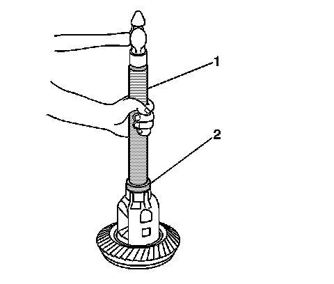

Carrier Bearings: Service and Repair
Differential Side Bearings Replacement
Tools Required
^ J 8092 Universal Driver Handle - 3/4 in - 10
^ J 21784 Side Bearing Installer
^ J 22888-D Side Bearing Remover Kit
^ J 29710 Differential Side Bearing Installer
^ J 36597 Side Bearing Puller Pilot - 9.25 inch
Removal Procedure
1. Remove the differential assembly.

2. Remove the differential side bearings by performing the following steps:
1. For the 8.6 inch and the 9.5 inch axles, install the differential assembly in a vise.
2. Install the J 22888-20A (2) and the J 8107-4, 8.6 inch axle, or the J 36597, 9.5 inch axle as shown.
3. Remove the differential side bearings using the J 22888-20A.
3. Remove the differential assembly from the vise.
Installation Procedure

1. Install the differential side bearings by doing the following:
1. In order to protect the differential case, install the J 8107-4, 8.6 inch axle, or the J 36597, 9.5 inch axle, in the case on the side opposite the bearing installation.
2. Install the J 21784, 8.6 inch axle, or the J 29710, 9.5 inch axle (2), and the J 8092 (1) onto the differential case bearing as shown.
3. Drive the bearing onto the case using the J 21784 or the J 29710 and the J 8092.
2. Install the differential assembly.